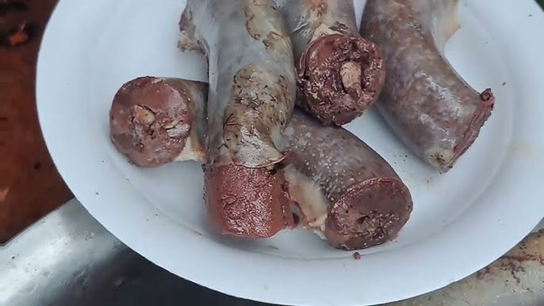

Pinuneg

Pinuneg Recipe
An Igorot dish composed of pig's blood, large intestines, and spices where the blood will be inserted inside of the large intestines along with spices then cut into sections that can be similar to sausages
Ingredients and Materials
- 2 ft intact and cleaned pig large intestine. It can be obtained from a pig butcher or slaughter house
- 400ml-500ml of pig blood. (can also be obtained from a slaughter house). Note: It is alright for the blood to jellify and darken once exposed for a period of time
- 1 tablespoon of salt
- 1 cup of minced red onion
- 1/4 cup of minced ginger
- 1 teaspoon of powdered pepper
- 1 1/2 liter of water
- 1/2 cup of minced garlic
- 1 cup of chopped leeks(optional)
- A cooking pot (must be big enough to hold the intestine as well as the water)
- 2-5 inch clean hard fiber threads for trying the ends of the intestines (preferably thin abaca rope or thin biodegradable ropes)
Instructions
Note
If the intestine still uncleaned properly or if you wish to clean it further you can wash it through running the insides of the intestine while pushing the water with your hands. After this process, coat the intestine with salt then wash it with water. Do the same process again after turning the intestine inside out. Repeat this at least twice. Make sure not to tear an opening on the intestine during this process
- Mix the Ingredients
-
Once the intestine is cleaned, have the jellied blood and all other ingredients (don't add the leeks & intestine) in the bowl.
-
Mix thoroughly until the there is no more jellied blood.
- Stuff the Intestine
-
Tie one of the intestine's endings with the thin rope.
-
Through the open end of the intestine, pour the mixture. Fill the intestine enough for it not to burst open, especially when it is being cooked.
- Once the intestine is filled up, tie the end with the other thin rope.
- Cook the Intestine
-
Pour all the water into the cooking pot and preheat it until warm.
-
Once warm enough place the intestine inside the pot on a circular/spiral way.
-
If you wish to serve the broth as well, add 1 tablespoon of salt (you may add more according to taste).
-
Boil the intestine in the pot for 30-35 minutes.
-
Using a fork or knife, bore a hole on the intestine if you notice swelling parts due to trapped gas. Be careful not to rip the intestine apart since the flavor of the intestine would go to the broth.
-
Once cooked, slice the pinuneg into smaller pieces (the size can be according to your discretion).
-
Place the pieces on a plate then add the chopped leeks on top.
-
You can enjoy now your Pinuneg!
You can eat your Pinuneg with a plate of rice or dip it into soy sauce for additional flavor.
This recipe is based from a blog post from Dalikan. Here is the link:
Pinuneg Recipe
Home